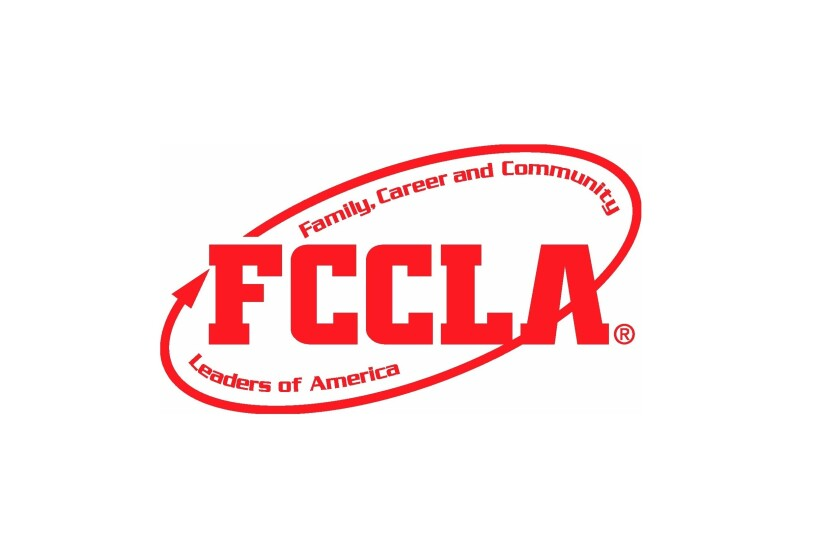

Family, Career and Community Leaders of America (FCCLA)
|

|
Family, Career and Community Leaders of America (FCCLA) is a national Career and Technical Student Organization (CTSO) for students in Family and Consumer Sciences (FCS) education in public and private schools through grade 12. FCCLA offers intra-curricular resources and opportunities for students to pursue careers that support families. Since 1945, FCCLA members have been making a difference in their families, careers, and communities by addressing important personal, work, and societal issues through Family and Consumer Sciences education. Club Activities
How to Join
Meet the Club Advisor |